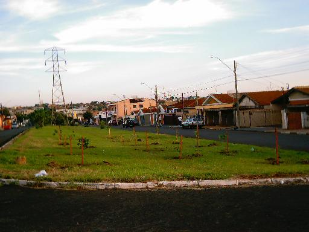
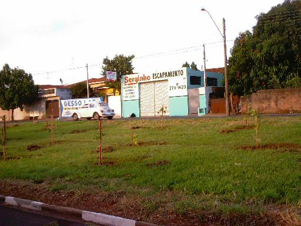
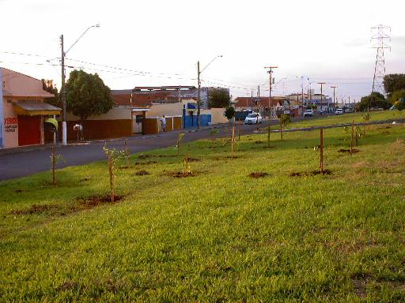

Feliz Ano Novo
!!!!
Nós
começamos o ano, como não podia deixar de ser !
Plantando árvores !
Começamos
agora uma nova fase de plantio, no Quarteirão G.
Nos dias 04 e 05 de Janeiro,
plantamos 15 mudas
de árvores de porte nativas, em
frente ao Serginho Escapamentos.
O dono da loja, Serginho, ficou
encarregado de cuidar das árvores.
Veja as fotos
das árvores:
 |
Onde só
havia grama, agora as 15 árvores já mudaram a vista da Avenida. |
 |
O trabalho
foi grande, mas o esforço é recompensado pela beleza das árvores ! |
 |
Esperamos
que mais moradores se interessem em plantar árvores ! |
Este plantio
nos deu grande prazer, pois começamos a mudar
um dos quarteirões menos
arborizados da Avenida Henrique Gregori.
Agradecemos ao nosso colaborador
Serginho
pelo interesse, e por cuidas das
mudas !!!
Esperamos que até o fim de
2003 já tenhamos completado
todos os quarteirões, com
inúmeras mudas.
Esperamos também que muitos
colaboradores apareçam,
para cuidar destas mudas !
Enquanto aguardamos que isso
aconteça,
continuaremos plantando muitas
árvores !!!
|